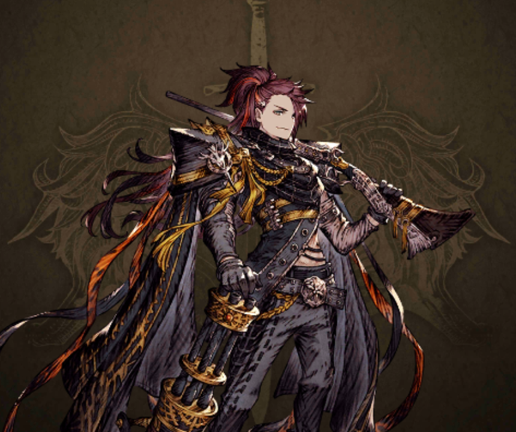
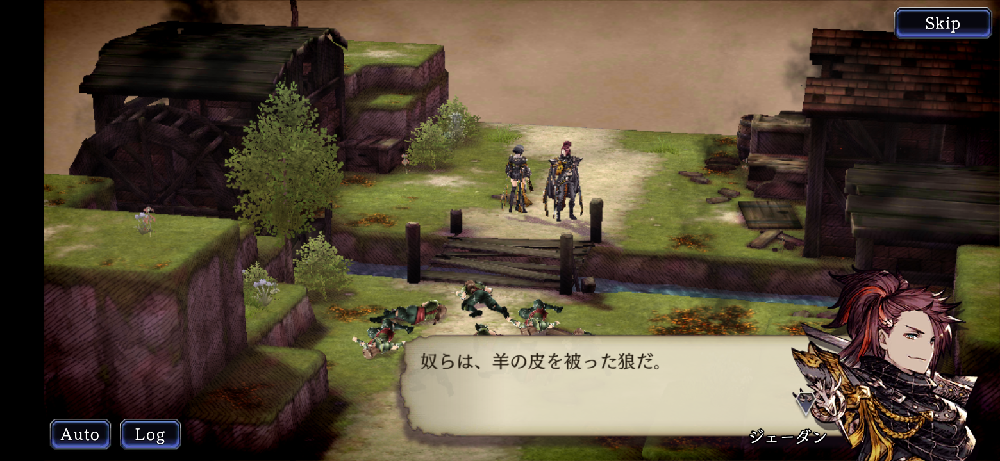
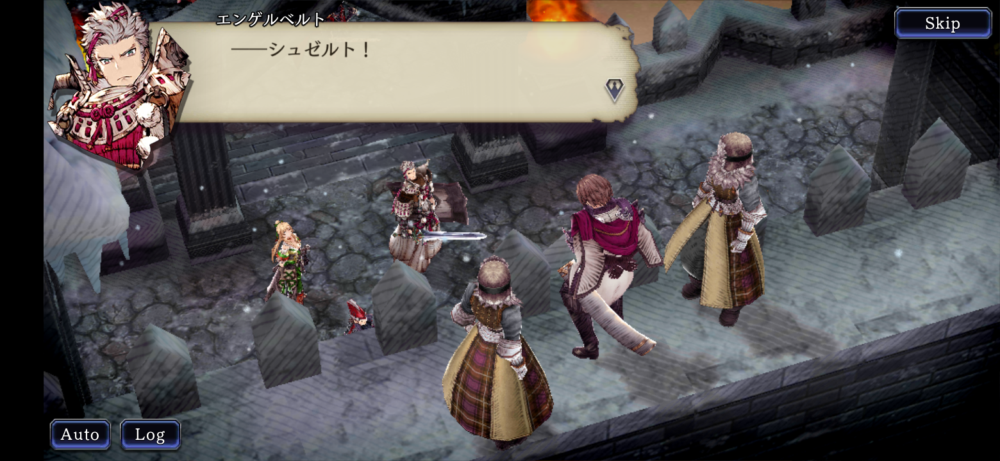
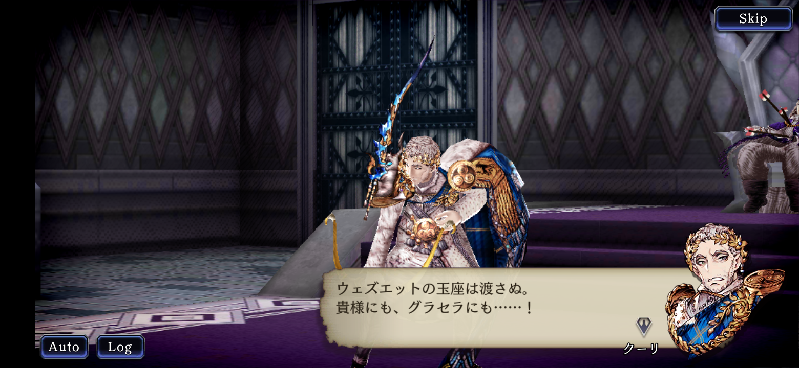
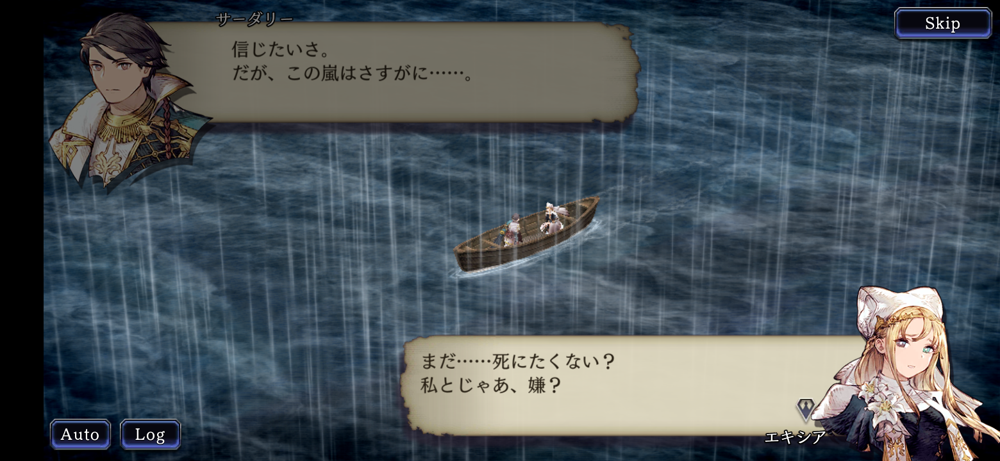
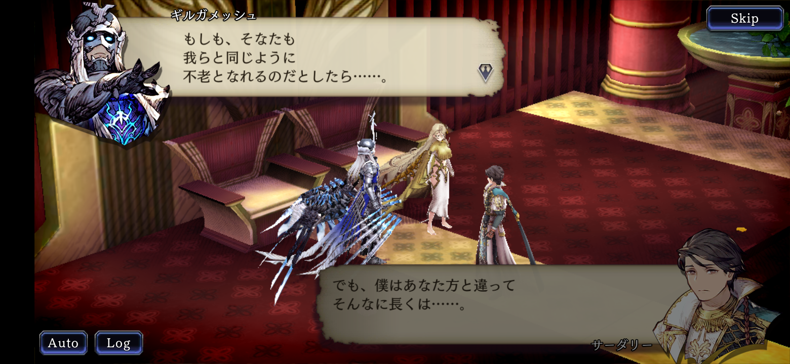

あらすじ
西の大国ランダルはハインドラとともにオウィスを攻める。リオニスとホルンの同盟はウェズエット王クーリを討ち、オウィスに味方する形でランダルと敵対するが、そこへクリスタル教のサーダリーがランダルを倒すべく信徒を操り戦場へと押し寄せます。民を戦場へと送りこむ暴挙を許せないリオニスの王モントはランダルと協力してサーダリーを倒そうとする。
第二部の登場人物
ジェーダン・ランダル
西の大国ランダルの王で第二部では主人公のような存在。
西の大国ランダルが同盟国のハインドラとともにオウィスへ攻め入る
ジェーダンはオウィスの姫を警戒しており狼と例えた。その理由は第三部で明らかになります。
リオニスとホルンの同盟がウェズエットに赴く
第一部でモントらを逃がすため捕虜になったシュゼルトを取り戻すべく、モントらはウェズエットと交渉します
ウェズエットの王クーリ討たれる
クーリは追い詰められ、娘のグラセラの手で息を引き取った。
サーダリーの過去が描かれる
サーダリーはクリスタル教を布教する宣教師として南方の地テセラからアードラ大陸へと渡ってきた。恋仲のエキシアもついてきていた。
当初はギルガメッシュに協力するサーダリーであったが、エキシアを失うことで敵対関係になった。
